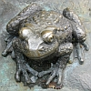

Le Mênage ès Feuvres,
St. Ouën.
Lé 24 d'août, 1968.
Moussieu l'Rédacteu,
L'aut' jour, quand j'tais à huiler l'gîndas dans l'pits ichîn au Mênage, j'pensais à l'histouaithe qué m'mèe soulait m'dithe quand j'tais mousse. Y'avait deux hommes tch'avaient marchi tout l'long du c'mîn d'Gouôrray ès Landes ichîn l'tou. Ch'tait un jour tch'i' faîsait eune chaleu d'dgiâbl'ye, et iun d'ieux avait grand sé. I' l'dit à san parchonnyi justément comme i' pâssaient l'long d'un pits comme ch't'î-chîn, sénon tch'i' n'tait pon si avant. I' fallait mème qué ch'fûsse un pits tchi n'tait pon bein avant, car comme i' r'gardaient d'dans, lé chein tch'avait sé dit à l'autre: "Sai-tu bein qué j'crai qu'si tu mé t'nais par les pids, té tch'est un grand fort gas, j'pouorrais m'mett' la tête en bas dans chu pits 'chîn et baithe dé l'ieau à man tchoeur content - et j'sis altéthé, man bouanhomme! Tch'est qu't'en crai?"
"Eh bein," s'fît l'autre, "Crai-tu qué j'pouorrais t'nîn tan paids?"
"Man Doue oui," i' lî rêponnit, "L'aut' jour, quand l'Sieur du Feu allit tuer siez t'n oncl'ye Amice, j'té vis l'ver l'couochon tout seu dé d'dans san traie auprès tch'i' y'avait passé l'gratteux, et l'porter sus t'n êpaule dans la vielle tchuisinne où'est qu'tén oncl'ye l'êbiaillit et lé d'bitit pour lé mett' dans l'saleux?"
"P't êt' bein," l'aut' lî dit, "Mais porter un lard sus l'êpaule, et supporter l'paids d'un homme par ses pids sont deux difféthentes choses, valet! Eune miyeu manniéthe es'sait d't'amather un pid à chaque but d'un gambyi et l'mett' sus m's êpaules par dessus ma tête. J'pouorrais t'nîn tan paids aîsiement d'mème sans m'gêner!"
"Véthe," l'aut' lî dît, "Mais j'n'avons pon un gambyi d'amain, ni d'filIn pour m'athaer. Et pis, étout, jé n'pouorrais pon d'valer, assez bas dans l'pits d'mème. I' faut qu'tu m'tcheinge par les pids!"
"Eh bein, i' faut y'êprouver," i' lî rêponnit!
Les v'la don en pliaiche, iun la tête en bas et les pids en haut dans l'pits, et i' trouvait l'ieau si bouanne tch'i' n'pathaîssait pon pouver en baithe à sa sé! Lé chein tchi lé t'nait par les pids en avait pliein ses braies! I' c'menchait à s'lâsser, et i' lî dît: "Dêpêches-té! Tu pèse pus qu'jé n'criyais, et jé c'menche à aver les bras et les mains lâssés. J'ai peux d'aver à laîssi couorre!"
"Eh bein," l'aut' lî dît. "Êcopis dans tes mains!"
Jé n'm'èrsouveins pon si m'mèe m'dit tch'est tch'en fut, mais chaque fais qu'j'êcopis dans mes mains en manniant l'manche d'un côti, j'pense à chutte vielle histouaithe-là. Ch'est r'mèrquabl'ye comme i' y'a certaines choses tchi vouos restent dans l'esprit pour toute eune vie! Ch'est comme les vièrs ditons tchi nouos dîsent qué quand nou-s-êcopit en haut, ch'la vouos r'tchait dans l'bé, et qué quand nou fait du bein au vilain, i' vouos êcopit dans la main. Quand j'tais mousse, Papa m'les ramémouaithait tréjous quand i' voulait m'dithe tch'i' fallait r'garder tch'est qu'nou dîsait, et s'mêfier d'un vilain!

En pâlant d'pits, lé chein d'siez Papa, à La Forge, avait 'té creûsé par lé Sieur Françot L'Cornu, l'parrain à man fréthe Fraînque, dé tchi j'vouos pâlais la s'maine passée. Y'avait tréjous des crapauds d'dans. J'pense bein qué ch'tait viyant qu'lé haut 'tait auy nivé du bel tch'i' tchilyaient d'dans en s'pronm'nant la niet. I' m'sembl'ye tch'i' y'en avait bein pus d'crapauds dans chu temps-là tch'i' n'y en a à ch't heu. I' faut penser tch'i;' n'empouaîsonnaient pon l'ieau. Quand l'sieau arrivait au haut du pids (ch'tait auve lé gîndas qué m'mèe lé l'vait), m'mèe m'ttait sa main souos l'crapaud tchi fliottait sus l'ieau, et l'env'yait s'pronm'ner dans l'gardîn sans lî faithe dé ma, et nou b'vait l'ieau sans y penser!
Y'avait eune vielle crianche qué l'pouorre vièr crapaud êclyichait du v'lîn, mais Papa m'dîsait tréjous qué ch'tait un tas d'niolîn, et tch'i' n'fallait pon en aver peux, ni lî faithe dé ma, car ch'tait eune bouanne chose d'en aver dans l'gardîn, viyant tch'i' mangeaient l's însectes niêsibl'yes ès frits et flieurs.
Ch'n'est pon seulement des crapauds tchi s'trouvaient dans les pits. Y'a deux-s'trais ans, l'sieau du pits ichîn au Ménage tchit dans l'fond et j'empreuntis un grapîn pour lé r'ramonter. Lé grapîn ramontit eune démié-douzaine d'objets! Bouan Dgieu sait comment tch'il 'taient v'nus à s'trouver. Entr'aut' choses, i' y'avait eune canne à lait comme les fèrmièrs d'au jour d'aniet mettent à la route touos les matîns pour êt' ramâssées par lé laitchi! Et y'avait deux ou trais boutchets sans hangnes tch'avaient probabliément fait sèrvi d'sieaux et tch'avaient resté dans l'fond quand il' avaient pèrdu lus hangnes. V'là tchi m'ramémouaithe acouo un aut' vièr diton: "Lé sillot va tant au pits tch'il y reste!" L's anciens appelaient tchiquesfais un sieau un sillot. Y'avait un vièr fé à j'va bein ûsé et un carcân d'vaque. J'mé d'mande si l'carcân avait tchée dans l'pits dans l'temps qué m'n oncl'ye Charles gardait sa vaque dans la p'tite êtabl'ye (abattue à ch't heu) à côté, y'a eune septantaine d'années? Dans touos les cas, l'ieau du pits a tréjous 'té bouanne à baithe!
George d'La Forge
Viyiz étout: